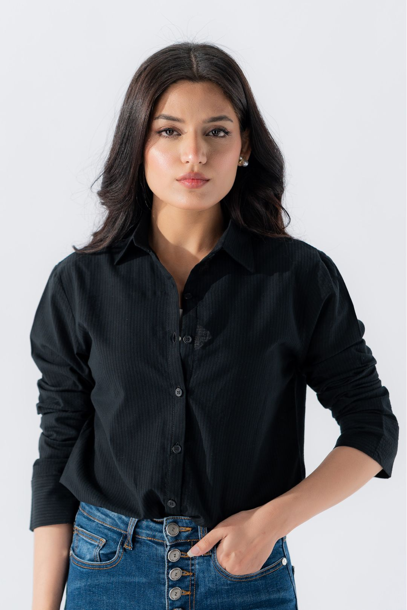
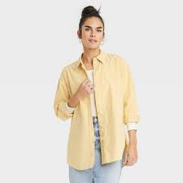
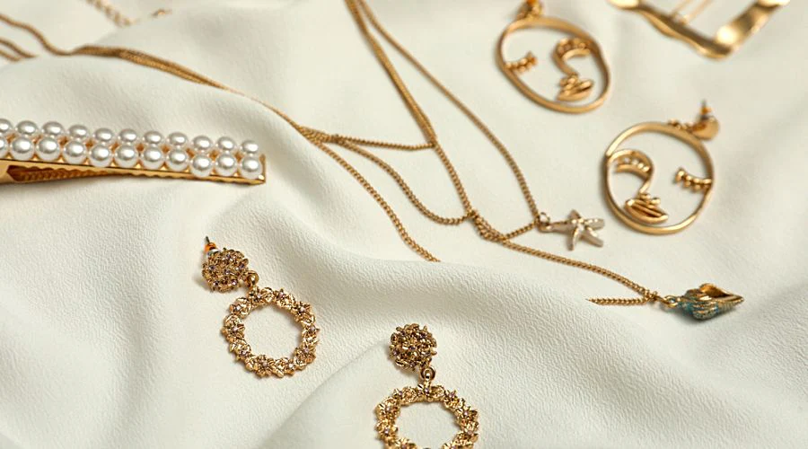
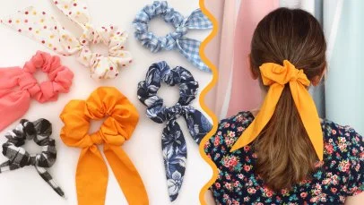
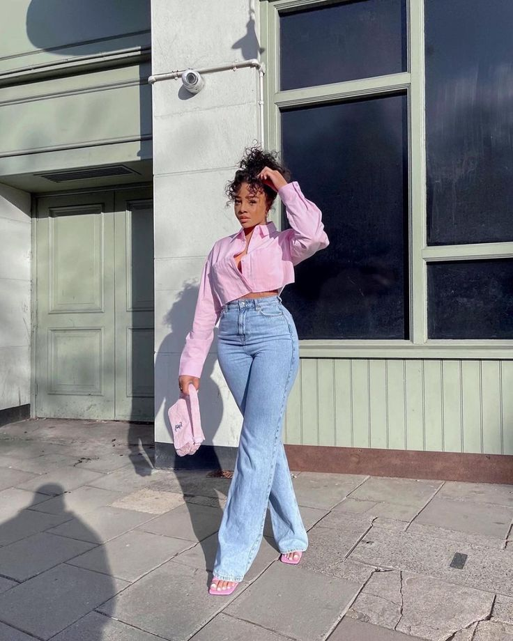

The black button-down shirt is a timeless wardrobe essential,
offering unparalleled versatility for both casual and formal
occasions. Whether paired with jeans for a laid-back look or
tailored trousers for a polished appearance, this classic
piece transitions
effortlessly from day to night.
Jan 11, 2024

A white button-down shirt is a classic staple that exudes elegance
and simplicity.
Perfect for both professional and casual settings, it pairs
effortlessly
with any outfit. Its crisp, clean look is
versatile, making it a must-have
for every wardrobe. Whether
dressed up or down,
the white button-down always delivers timeless style.
Jan 11, 2024

A yellowish shirt adds a pop of warmth and brightness to any
wardrobe, making it perfect for cheerful,
casual looks. Its subtle yet vibrant hue pairs well with neutrals
and denim, offering a fresh twist on everyday style. Ideal for sunny
days or adding a splash
of color to your outfit, a yellowish
shirt effortlessly radiates positive energy.
Jan 11, 2024

A yellowish shirt adds a pop of warmth and brightness to any
wardrobe, making it perfect for cheerful,
casual looks. Its subtle yet vibrant hue pairs well with neutrals
and denim, offering a fresh twist on everyday style. Ideal for sunny
days or adding a splash
of color to your outfit, a yellowish
shirt effortlessly radiates positive energy.
Jan 11, 2024

Jan 11, 2024

Accessories are the perfect finishing touch to any outfit, adding
personality
and flair to your look. Whether it's a statement necklace, a sleek
belt,
or a stylish watch, the right accessories can elevate even the
simplest attire.
Versatile and expressive, they allow you to
showcase your unique style
and enhance your overall appearance. From casual to formal,
accessories are key to transforming your outfit from ordinary to
extraordinary.
Jan 11, 2024

Scrunchies are a fun and stylish way to elevate any hairstyle while
being gentle on your hair.
Available in a variety of colors, patterns, and fabrics, they
add a
playful or chic touch to your look. Perfect for both
casual and formal occasions,
scrunchies are versatile
accessories that blend fashion with function. Whether you're tying
up a ponytail
or adding a pop of color to your wrist, scrunchies are a must-have
for every accessory collection.
Jan 11, 2024

Scrunchies are the perfect blend of style and practicality, adding a
pop of color and
texture to your hair while being gentle on strands. Whether
you’re rocking a messy
bun or a sleek ponytail, scrunchies offer a fun, trendy way to
elevate your look.
Available in a range of fabrics and
patterns, they’re versatile accessories that can
complement
any outfit. From casual days to dressed-up occasions, scrunchies are
a must-have
for every hair accessory collection.
Jan 11, 2024